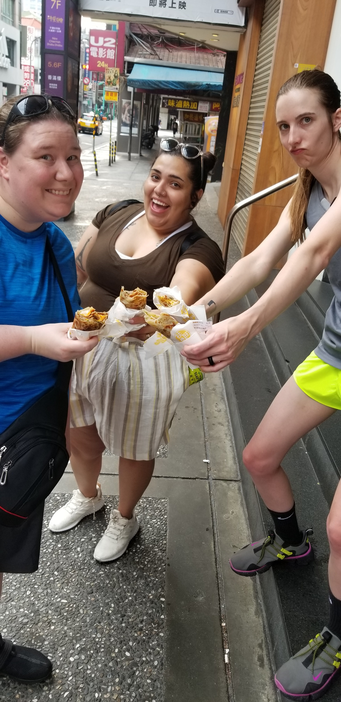
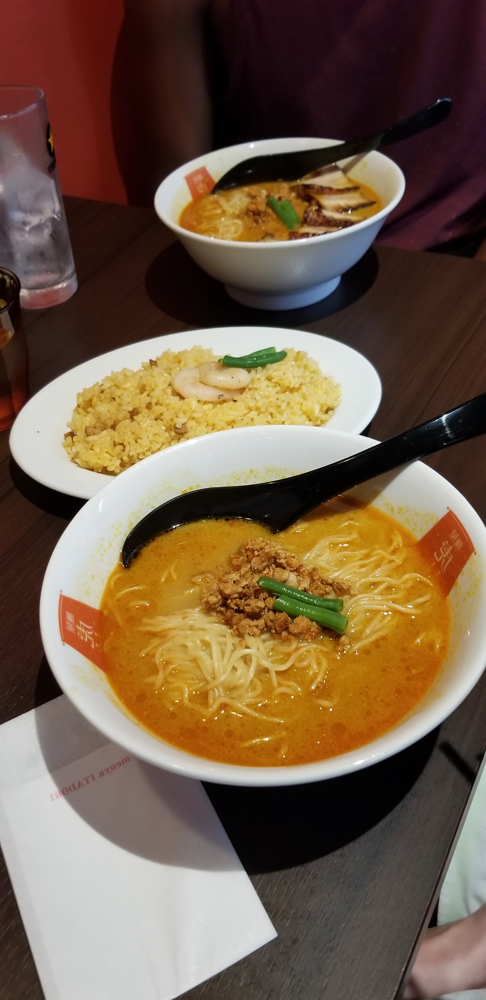

A year ago, my wife’s best friend from kindergarten and her wife had a crazy idea.
“Go to Taipei with us!” they shouted. To be honest, I wasn’t even sure where Taipei was on the map.
I was a 24 year-old who had never been out of the country and working a job that paid less than $25,000 a year.
How could I afford to go on a globe-trotting trip?? But something within me said I had to try.
Over the course of a year, my friends, wife and identical twin (I convinced him to go along with our little scheme) found Air BnBs, bought plane tickets in the unnatural glow of a 2 am laptop screen, and scraped up every penny we could via DoorDashing and yardwork to finance our trip of a lifetime.
I hope that anyone reading this out there can learn from our hiccups and successes, so that you too can travel the world.
From jump I need to say: get you a professional to take care of your passport.
There are some of us out there that our independent types.
We do our own taxes, change our own oil, and have never even considered valet parking.
However, when it comes to a vacation you and six other people have spent a year planning and have already paid for, TRUST ME just eat the extra $50 and hire a professional to handle your application.
My wife and I were the first to apply for our passports and followed all of the instructions down to the miniscule, yet our passports had to be expedited (an extra $75 each) and we still had to drive six hours to Minneapolois (the closest passport office) two days before we flew out of the country to REAPPLY for my passport and ensure we would have it in hand.
You will save a lot of heartache and ultimately money if you go to a passport service.
A few other tips: a trip like this can be expensive so, as I mentioned before, give yourself ample time to plan and pay for it.
My group started a year out and paid for things in sections.
First the deposit on one hotel, then our passports, next the plane tickets, then paid off our Air BnB, and finally our spending money.
Each leg of the vacation was put into a different month so that it never felt too daunting.
It made it what once seemed impossible and only for the rich into an affordable vacation for my family that I should have done years ago.
For any trip, I would suggest to never buy plane tickets that land after 9:30pm. Most kiosks begin to close around 11pm, so when we landed in Taipei at 10:45pm we almost didn’t get to exchange our American money to the national currency.
Since Taiwan only uses Tawainese Dollars, we would have been stranded at the airport with no means to get to our hotel, purchase pocket wifi (an essential for translations) or even food!
Even after squeezing into the currency exchange and pocket wifi, our plan A for riding the subway to our hotel was thwarted due to missing the last train of the night.
Luckily, we caught the last bus out of the airport so that we could get to our hotel, but it was a lot of stress that I could have done without.
Start Of a Journey: Taipei
When we got off of our bus (which looked just like any ordinary Greyhound bus but with shorter ceilings) we walked out onto a quiet street in Taipei around midnight.
Thousands of mopeds lined the street like dominoes, abandoned for the evening as their owners slept.
Around the bus station, there were about twenty people sleeping along the streets in the humid Taiwan night.
Some were bus drivers, but many were homeless.
Google Maps kept mistaking us for a car and directed us into back-alley ways that we decided to avoid.
Suddenly the wind kicked up and it began to pour as we toated our worldly possessions behind us.
By the time we all pulled out our ponchos and umbrellas, hilariously the rain had stopped.
We arrived to an empty desk at our hotel, but found our keys easily and our little apartment was quite the sight for sore eyes.
There was a nice little hallway to put our shoes and a sliding glass door to get into the actual living area.
We stepped into the living room, where my brother’s twin bed was tucked into a corner facing the couch.
Ahead was a little sink and microwave to serve as the kitchen and not a step beyond that was our bathroom.
The entryway was quite small to our little lavritory and even the shortest amongst us Americans had to duck to gain entry.
Finally, our friends’ bed was underneath the stairs, while my wife and I found are bed lofted above it.
All of this fit into a single room. The only thing separated off was the bathroom.
As shocking as the living arrangement was for the six of us (so used to large houses and grandiose hotel rooms that American capitalism provides) I must say we were greatly relieved and a little humbled.
It made me really think...do I need all that space? All those extra rooms? I think this is the heart of traveling the world.

Taipei is a night city, so we awoke too early on our first day and had to wait for the solitary breakfast joint to open.
We had a sort of pancake wrapped breakfast burrito that was hot and spicy and everything our stomachs and imaginations needed after such a long journey.
My merry group of tourists visited Chang-kei Chek memorial hall, a marveling feat of architecture, and then an ancient Buddist temple that smelled of sweet incense and made our short lives seem like a grain of sand in a beach of human history.
Throughout the week we visited Taipei 101, formerly the tallest building in the world, and ate amazing meals in bustling chaos of the night markets.
We had only 4 days in Taiwan, but we felt satisfied and ready to start the next leg of our trip.
I left Taipei amazed at the uniqueness and selection at the 7-Elevens, the convenience and reliability of their public transportation, and the overall beauty of the volcano, people, and ability to live on so little money.
Japan had a lot to compete with.
Conclusion Of A Journey: Japan
Tokyo had been a dream of mine since my twin and I were little.
We loved anime and had watched the scenery of Japan from afar and with curiosity for most of our lives.
I promised myself one day that we would see it for ourselves.
To be honest, the Japanese subway system was a bit more daunting than that of Taipei.
Our AirBnB was just as cozy as the last, but this time we each got a bit more privacy with walls around our beds.
The neighborhood we were staying in was quiet and picturesque.
We were struck with how many of the residents walked and biked home.
It was such a change to be away from the den of honking cars and engines.
Each day we filled more than we did in Taipei.
Temples, Disney World, Akiabara of anime lore, the Emperial Palace and of course: Ramen.
We couldn’t get enough ramen.

Although many warned us that Tokyo would be expensive, we found it pretty on par with American pricing (though I maintain that eating there is still cheaper than the states).
We stayed about a week in Tokyo and all of my group were pretty tired by the end of it.
We were in the country long enough to get our fill but just at the edge of being homesick.
We wanted pizza, real pizza.
Each of us traveled back with more souvenirs than we could fit in our suitcases and more stories than our jetlagged selves would be able to remember.
I was wiser and more content. Even before the jetlag had worn off, I was already planning my next trip.
I missed the steamed buns of the 7-Eleven and the thrill of riding the subway to a neighborhood I nor anyone I knew had ever seen before or would ever see again.
I hope everyone gets the chance to travel out of the country at least once in their lifetime.